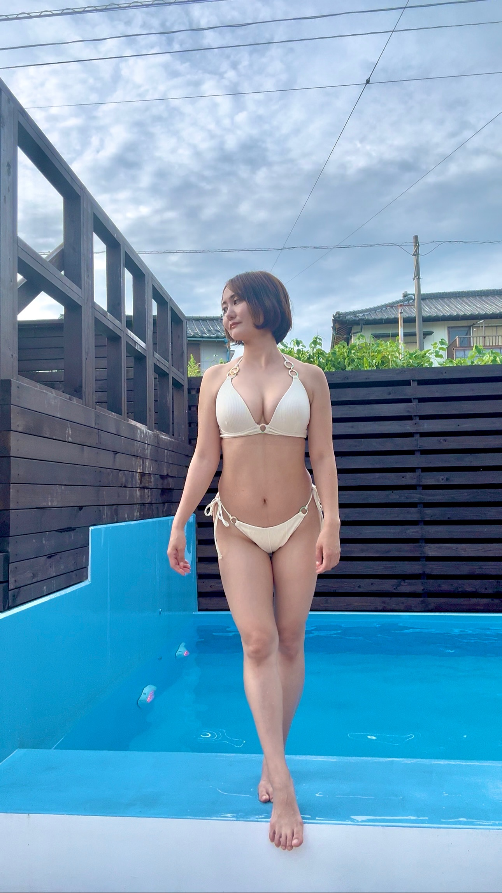

TOP / About
About

はじめまして、カオリです。4児のママです。産後、体型の変化に悩んだ時期がありました。体重を落とすことだけを頑張っても、なりたい見た目には近づけなかった経験から、姿勢・筋力・ケア・環境・栄養という体の土台から整える大切さに気づき、C→Gカップを経験しました。
「もう歳だから」「産んだから」とあきらめる前に、できることがあります。同じ道を歩んできた並走者として、あなたのペースに寄り添いながらお手伝いします。